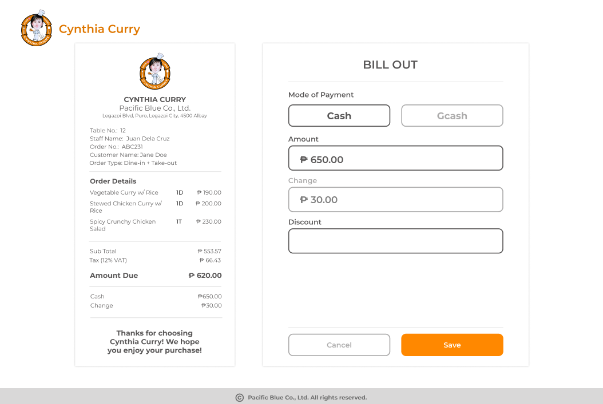

Throughout this week, I continued contributing to the development of the POS system, specifically focusing on the cashier and admin functionalities. I developed the frontend interface of the cashier module and assisted in implementing features related to order management and transaction processing.
I also worked on the admin side of the system, including the dashboard, logs, categories, and user management sections. My responsibilities included organizing the layout, improving navigation, and ensuring that the admin pages were functional and user-friendly. Additionally, I redesigned the “Start Order” page for the server staff view to improve workflow efficiency and usability during restaurant operations.
This week enhanced my frontend development skills and expanded my understanding of admin management systems and system organization. I also learned the importance of designing interfaces that support efficient operations and user productivity.
